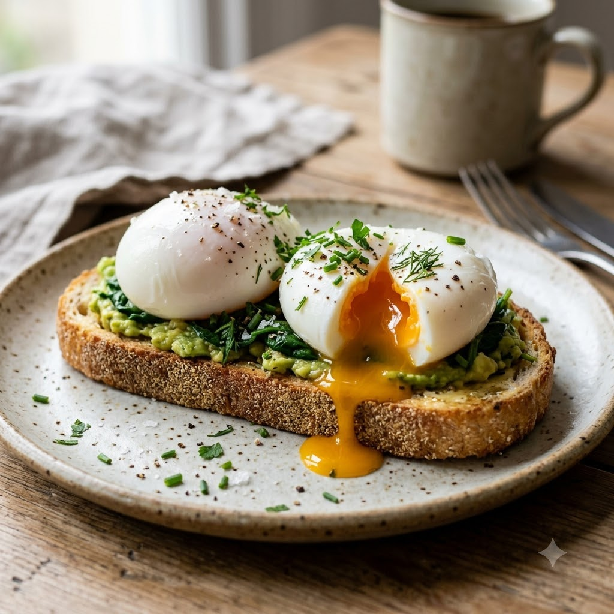

Poached Eggs (Chef Magic Method)

Poached Eggs (Chef Magic Method)
Chef Magic – Boil Auto 4 min per batch — Serves 2
Gluten-Free • Eggetarian • High-Protein • Everyday
Ingredients
- 2–4 eggs, as fresh as possible
- 1 tsp vinegar
- Water, as needed
- Salt and pepper to taste
- Toast, to serve
Method
1Fill the Chef Magic jar with water and add the vinegar; select Boil (Speed 1–2, 100°C) and bring to a gentle simmer, not a rolling boil.
2Crack each egg into a small cup first, then gently slide it into the simmering water.
3Let it cook undisturbed on Boil (Speed 1) for about 3 minutes, until the white is set but the yolk is still soft.
4Lift out with a slotted spoon and rest briefly on a paper towel to drain.
5Season with salt and pepper and serve on hot buttered toast.
Tip: The vinegar helps the whites set faster and stay together — don't skip it even if you can't taste it in the final egg.